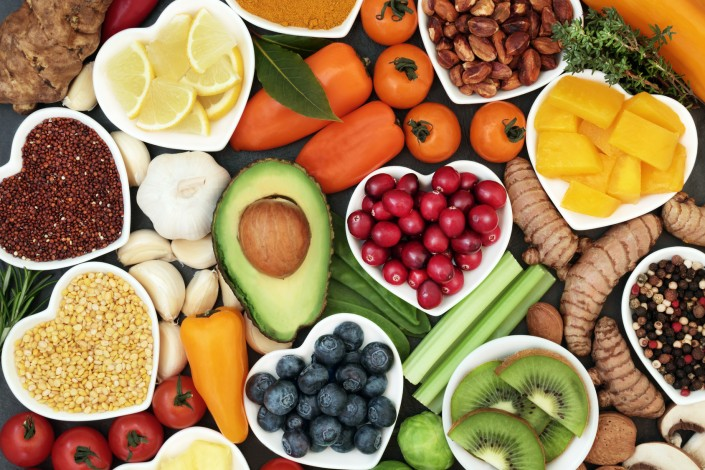

Découvrez toutes nos recettes faites avec amour !

Nous souhaitons partager avec vous toutes nos recettes coup de coeur, faciles et rapides à faire pour déguster de bons petits plats en famille. Réveillez le chef qui est en vous - JUST DO EAT !
Retrouvez toutes nos recettes ici
Recettes sucrées
Petits déjeuner : Pain perdu caramel beurre salé, Granola Bowl, Banana Bread
Gouters : Cookies, Cheesecake, Moelleux au chocolat
Desserts : Tiramisu, Tarte au citron, Crumble poire/chocolat
Recettes salées
Plats chauds : Wok de légumes de saison, Pâtes fraiches pesto, Gratin de courgettes
Plats froids : Salade avocat et quinoa, Saumon sauce Thaï, Ceviche de thon
Apéro : Souflés au chèvre chaud, Houmous aux olives, Aubergines grillées